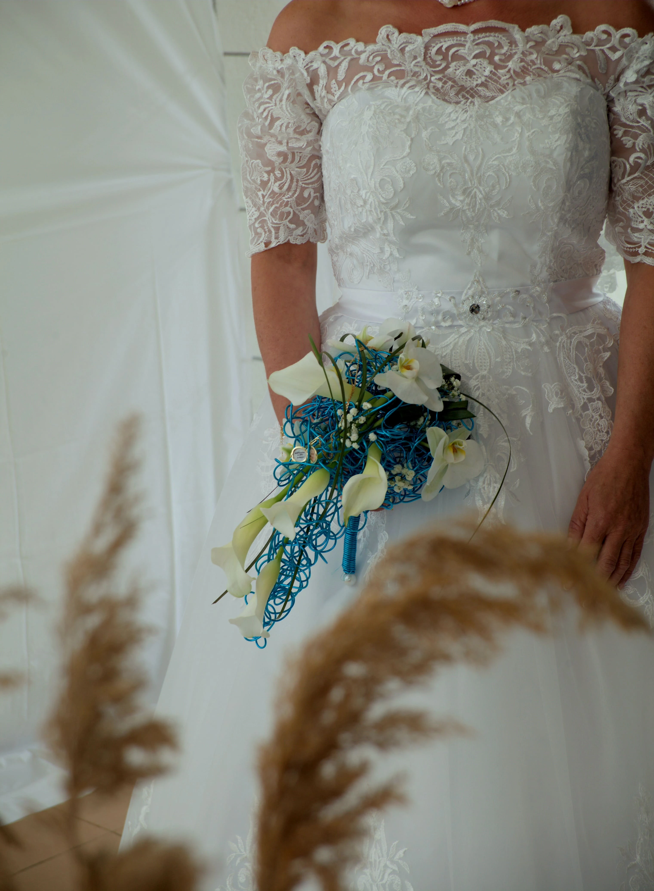
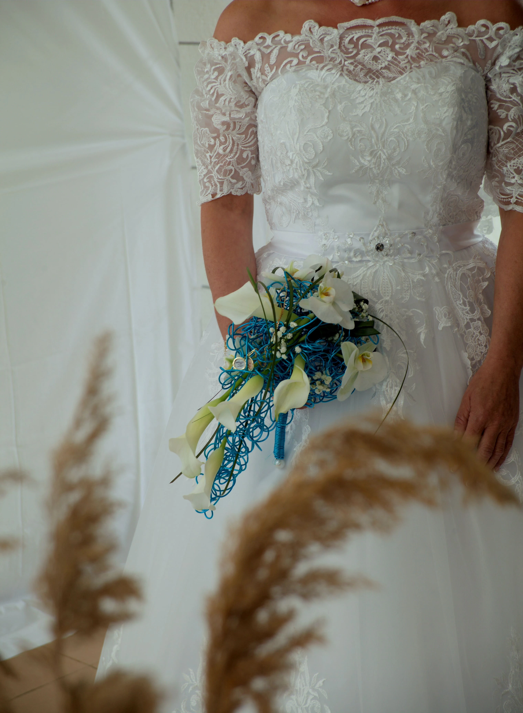
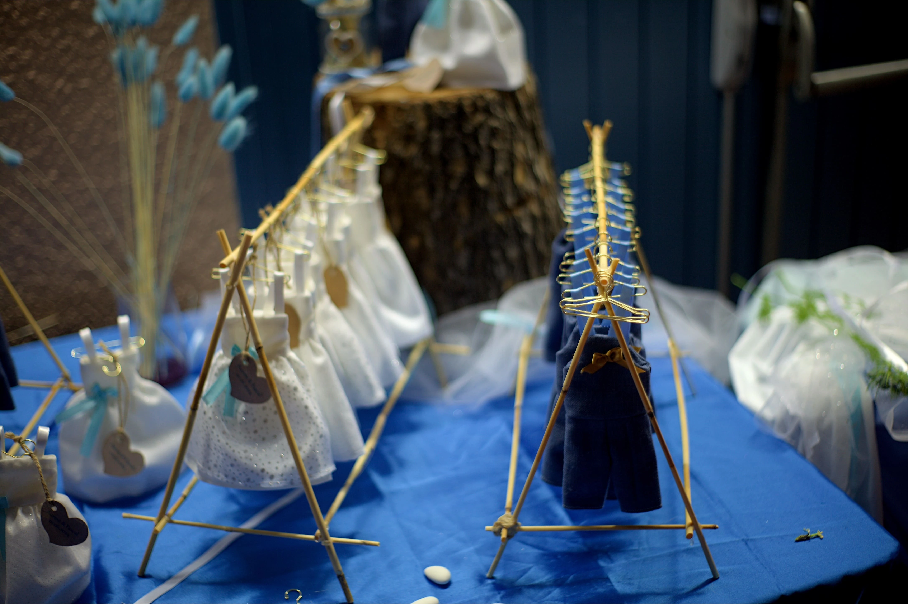
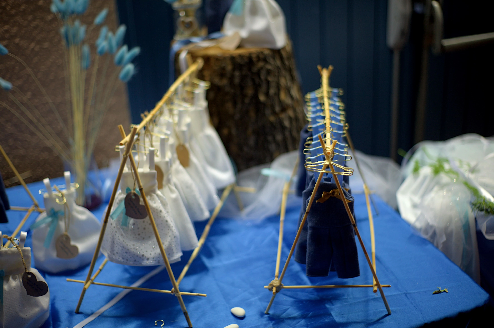

Capturer les instants qui deviennent souvenirs
Reportages naturels, portraits sensibles et détails choisis. Je privilégie les émotions vraies et la lumière naturelle.

Portfolio
 

 



À propos

Bonjour, je m'appelle Peters. Photographe de mariage intimiste basé à Viviez en Aveyron Occitanie depuis plus de dix ans, j’ai découvert ma passion aux côtés d’amis eux-mêmes passionnés, en capturant d’abord les instants festifs de mes proches. Aujourd’hui, je mets un point d’honneur à photographier des moments authentiques, spontanés, où chacun peut rester soi-même. Les photos trop posées ne sont pas dans mon style, je préfère la sincérité d’un regard ou d’un geste pris sur le vif. Je m’adapte à la sensibilité de chacun, que ce soit par le tutoiement ou le vouvoiement, dans une ambiance toujours détendue et bienveillante. Photographe de mariage j’ai une préférence pour les mariages intimistes, où la simplicité et l’émotion prennent le pas sur le reste. Je serai heureux de faire votre connaissance et de raconter votre histoire en images. .
Basé en France. Disponible pour déplacements nationaux et internationaux.
Demande de disponibilité
Remplissez le formulaire ci-dessous pour me contacter — je réponds en 48h maximum.